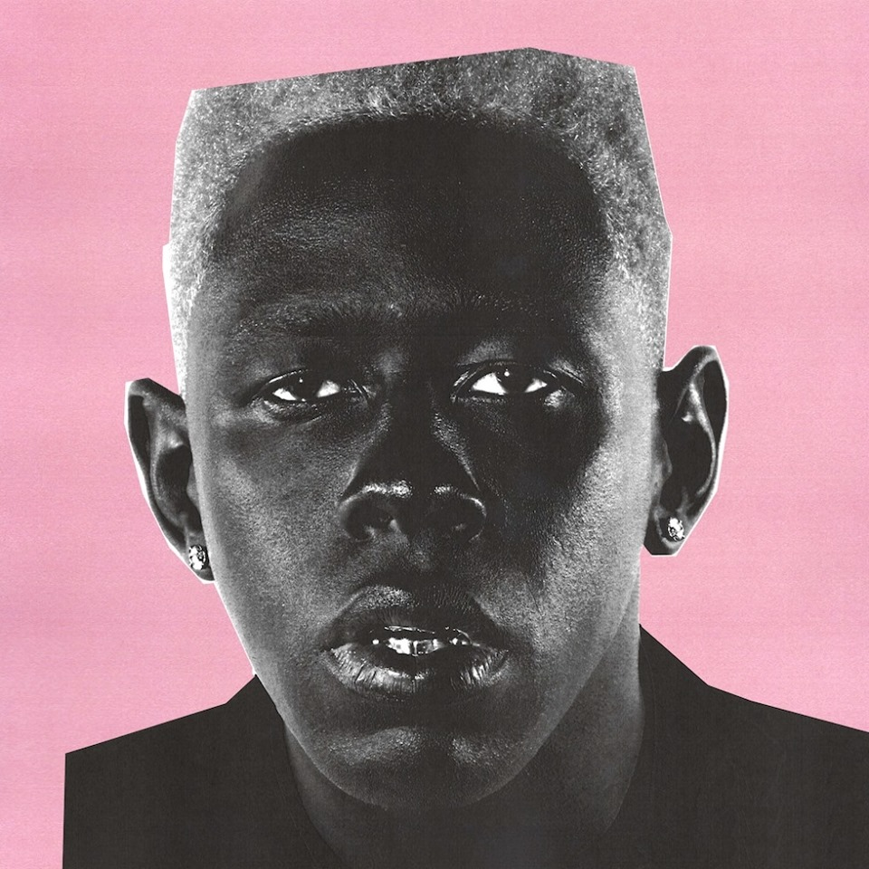

Igor
Tyler the creator


 Igor is the fifth studio album[a] by American rapper Tyler, the Creator, released on May 17, 2019, through A Boy is a Gun and distributed by Columbia Records. Produced entirely by Tyler, the album follows the 2017 release of Flower Boy. It features guest appearances from Playboi Carti, Lil Uzi Vert, Solange, Kanye West, and Jerrod Carmichael, along with backing vocals from Santigold, Jessy Wilson, La Roux, CeeLo Green, Charlie Wilson, Slowthai, and Pharrell, among others.
Igor is the fifth studio album[a] by American rapper Tyler, the Creator, released on May 17, 2019, through A Boy is a Gun and distributed by Columbia Records. Produced entirely by Tyler, the album follows the 2017 release of Flower Boy. It features guest appearances from Playboi Carti, Lil Uzi Vert, Solange, Kanye West, and Jerrod Carmichael, along with backing vocals from Santigold, Jessy Wilson, La Roux, CeeLo Green, Charlie Wilson, Slowthai, and Pharrell, among others.
- IGOR’S THEME
- EARFQUAKE
- I THINK
- EXACTLY WHAT YOU RUN FROM YOU END UP CHASING
- RUNNING OUT OF TIME
- NEW MAGIC WAND
- A BOY IS A GUN
- PUPPET
- WHAT’S GOOD
- GONE, GONE / THANK YOU
- I DON’T LOVE YOU ANYMORE
- ARE WE STILL FRIENDS?